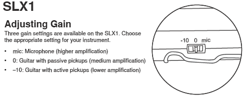
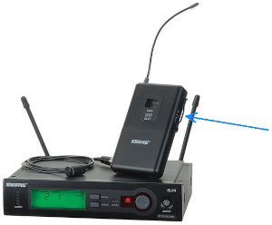
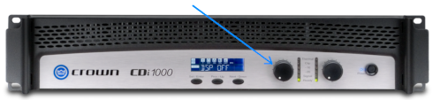
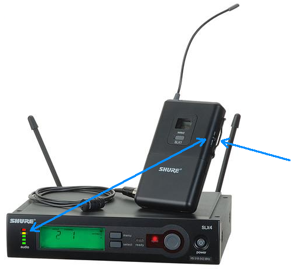
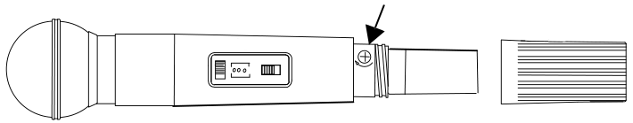
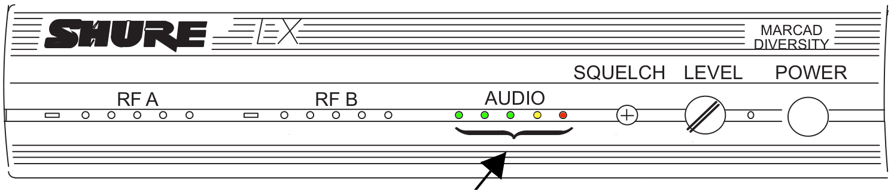
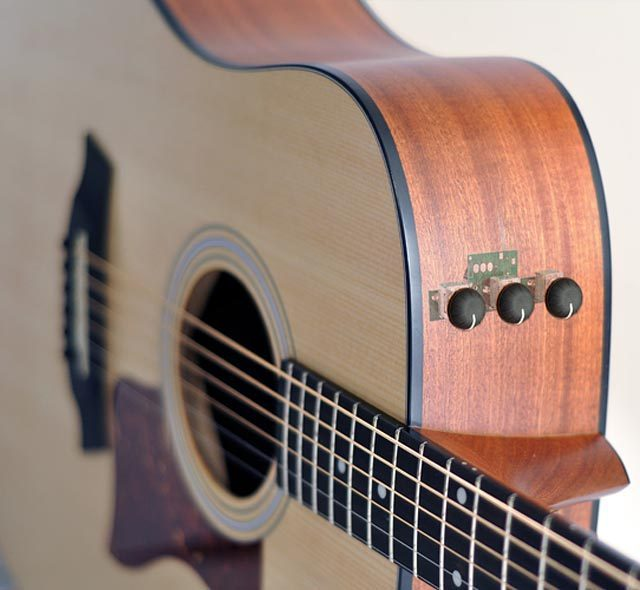
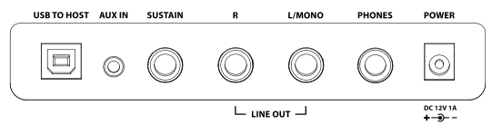

But the five items mentioned above are not the only ways to change the pastor's volume.
On the pastor's wireless bodypack there is a gain switch. We usually set it to the middle
position. This will also change the pastor's volume.


Above: The gain switch on the pastor's wireless bodypack. (We set it a "0")
In addition, there is the gain control on the power amplifier which will also change the
pastor's volume.

Above: Gain control on the power amplifier.
That brings the total to seven different ways to change the pastor's volume. Of course, in
routine operation we somehow intuitively just know that the channel fader (black slider)
is the item to adjust. We have always done it that way, so it seems obvious. Gain Structure
is the explanation for why the adjustment should be done this way in routine operation. More
specifically, gain structure explains how to set all the other possible adjustments correctly
so that the channel fader (black slider) does what we expect.
Description of gain structure
The signal chain is the sequence of circuits and adjustments that the signal passes through
on the way to the loudspeaker, recording, video stream, or any other final destination. At every
point along the way of the signal chain the signal must be at an acceptable level, not too strong
and not too weak.
• If the signal is too strong, it becomes distorted at that point. No gain adjustment
after that point can remove the distortion. Furthermore, no gain adjustment before this point
can eliminate the distortion without adding needless noise. There is only one gain adjustment
that will correctly mitigate the problem of the signal being too strong at this point.
• If the signal is too weak at some point, it cannot overpower background noise, hiss,
buzzes and/or humming sounds that exist at extremely low levels in any electronic circuit.
(Even in digital circuits quantization noise becomes an issue.) Once this noise is apparent
in the signal, no gain adjustment after this point can eliminate the noise. Furthermore, no
gain adjustment before this point can solve the noise problem without adding needless
distortion. There is only one gain adjustment that will correctly mitigate the problem of
the signal being too weak at this point.
Getting the signal strength within bounds all along the signal chain starts at the very first
gain adjustment. In the case of the pastor's mic example above, that is the gain switch on the
pastor's bodypack. If that is set too high (e.g. in our case, "mic") then there will be distortion in the
radio-signal. No gain adjustment later in the signal chain can remove that distortion. If it
is set too low ("–10" in our case) then the signal will be too weak in the radio channel
and some hissing and static will be audible in the signal. No gain adjustment later in the
signal chain can remove the noise.
That first gain adjustment in the signal chain, wherever it may be, is critical. It matches the
source. In this example, the combination of the particular brand and model of the pastor's
ear-set microphone and the pastor's style of talking (or shouting or whispering) is matched
to the electronics that will follow the gain adjustment. Usually, once this one is somewhat
near optimal the rest of the gain adjustments will be about right too just because previous
users of the system have set them reasonably. But any gain adjustment that runs the signal
level below the noise level or above the distortion level will cause a problem that cannot
be corrected well by any other gain control.
The last gain adjustment in the signal chain has a special role. Instead of adapting the signal
level to the following electronics, it adapts the signal level to the hearing levels of the people in
the room! In the example of the pastor's mic channel, the last gain control in the signal chain
is the one on the power amplifier. This is the gain control that establishes the maximum loudness
in the sanctuary (or other destination) that can be achieved. If this is too low, no amount of
adding gain before it will add enough loudness. Those earlier gain controls will only end up
adding distortion. If this final gain control is too high, there will be hiss and noise in the
background of the sound. No gain control in the signal chain before the final one will do a good
job of reducing that background noise. If this gain control is set correctly there will be
enough loudness to bring on feedback in practically any situation (if the faders are pushed up
too high for example) and to cause the audience to perceive more than enough loudness, yet the
signal will be undistorted during normal operations and when there is supposed to be silence,
the system will not be humming or hissing or letting spurious radio signals get through.
Once all the channels are correctly gain trimmed the rest of the board will generally behave
well in terms of overall signal levels. The general strategy should be to use the master and
group faders (red and yellow sliders) to control the desired overall loudness of the
mix and to use the channel faders (black) to get a pleasing balance within the mix. In many
cases one can put the group master faders (red) to good creative use in managing the
instruments vs. vocal balance and the L-R master faders (two left-most yellow) to control
overall loudness. As one is doing this one should be careful not to over-drive or under-drive
the internal mixer busses leading into and out of the master section of the mixer board, but as
I've mentioned, if the individual channels are all properly gain-trimmed and the final power-amplifier
is properly gain trimmed, then everything in-between will tend to stay in-bounds for any
reasonable mix.
How to get the gain structure right
Each gain adjustment along the signal chain will have some type of indicator of signal level.
In general, if a red light is blinking, the signal is too strong, reduce the associated
gain setting. If green lights are never blinking, the gain is too low, increase the associated
gain control. One should read the user's manual for the equipment to discover how to
deal with yellow indicators. These vary from device-to-device. In general, on
analog equipment occasional blinking of yellow is usually considered acceptable but does
mean that some inaudible or nearly inaudible distortion has happened. The rules above apply to all
the equipment on our sound desk except the CD recorder and the Behringer audio interface to the
Facebook stream because those two items have digital aspects.
A side note: Alan & Heath recommends that optimal levels for our mixer ideally should be
high enough to make the +6 dB (yellow) LED blink occasionally on the loudest parts of the signal.
At Covenant Church we run a little lower than that (keep peaks at 0 dB or less if practical)
because some of our equipment is digital, such as the CD recorder and the Behringer computer
audio interface for the Facebook stream.
Digital equipment takes various approaches to color-coding signal levels. As usual, green is good,
red is bad, but yellow is different. Some digital equipment does not use yellow on the VU meters.
This is because the boundary between bad distortion and a practically perfect signal is very narrow
on all digital systems. The signal either clips (indicated by red) or is near perfect (indicated by
green or any color other than red). For some other digital equipment the yellow lights indicate a
desirable level for the loudest portions of the program. In this case the loudest parts of the
signal should routinely and frequently cause yellow to be displayed. In still other digital
equipment the yellow represents a reserve headroom amount that should not be routinely used.
In this case an occasional flash of yellow is OK, but one does not want to see it routinely, not
even on the loudest parts of the program. Read the equipment manual(s) to figure out the
recommended settings.
Behringer computer audio interface and CD player
Our entire sound system is analog except for the CD recorder and the Behringer computer audio
interface that delivers audio for the Facebook stream. On the CD recorder we desire to see the
loudest parts of the signal at –12 to –3 dB but not routinely above –3 dB. (The CD recorder has
no yellow colors on its meters.) On the Behringer computer audio interface the "peak" LEDs (red)
and the gain adjustments on this audio interface are on the analog side and should be adjusted
according to the analog rules above, but it is a little difficult because there are no green
or yellow LEDs, just one red led on each channel to warn of clipping. The red should never blink,
but the gain should be high enough so that they are on the verge of blinking. (If it blinks
rarely, leave it alone until a practice session later. It is a touchy adjustment and it is
easy to make it worse.) The OBS software that receives the USB audio stream uses the convention that
the louder portions of the signal should drive the VU meter into the yellow. Yellow is the goal to
achieve, but red is to be avoided.
Shure SLX wireless mic--pastor's mic
In the example of the pastor's microphone, the indicator for the bodypack's gain switch is on
the receiver. On the left-hand side of the receiver there is a small LED bar-graph style VU
meter. If the green lights on this meter never flash, the gain is too low, switch the gain
on the bodypack to a higher setting. If the yellow light on this meter are frequently
blinking or if the red light is occasionally blinking, switch to a lower gain setting on the bodypack.

Above: Each gain adjustment has some type of indicator to help set it correctly.
Shure LX wireless mics—handheld wireless mics
Our handheld wireless microphones also have gain trim adjustments in them. The VU meter that
responds to the gain trim in the microphone is the "AUDIO" VU meter on the corresponding
receiver.


Above: Each gain adjustment has some type of indicator to help set it correctly.
Many wireless receivers have additional gain adjustments on the receiver itself. One can be
seen on the front panel of the "LX receiver" shown above, labeled "LEVEL." In our case, Turn
this front-panel level control all the way up. Then adjust the corresponding gain trim at the
top of the mixer board (red) as usual. Shure provides this front-panel LEVEL control just in
case the device the receiver is connected to does not have a gain trim adjustment. The only
reason to set the LEVEL control on the front panel of the receiver below maximum is if you
cannot prevent overloading (red LED flashing or audible distortion) any other way.
Electro-acoustic musical instruments
Some electro-acoustic musical instruments have gain controls on them. Musicians may use
these for creative control. However if you are having difficulty getting enough signal at
the first gain trim of the sound board (see next paragraph), an adjustment on the musical
instrument is the likely problem. Most instruments cannot produce such a strong signal
that it necessarily overloads a mixer board, but weak signals can be an issue. With this
in mind, if possible, ask the musician to turn the gain control on the instrument all
the way up, or at least all the way up for the parts that the musician wants to be the
loudest. Guitars are not the only electro-acoustic instruments that might have
gain controls. Violins, saxophones, and many acoustic instruments equipped with a pickup, can
have gain controls.

Above: An Electro-acoustic guitar with gain and tone controls.
Photo source, Mooloolaba Music, fair use.
Electric musical instruments
Most electric musical instruments have several gain controls. Musicians often deliberately
cause distortion with these gain controls as a creative effect. Just be sure the signal
arriving at the mixer boards is at a normal level. Quite often the electric instrument
drives an "amplifier" located on-stage near the performer (really an amplifier plus a loudspeaker)
and a microphone is placed in front of the amplifier's loudspeaker to get the signal to the
sound system. If this is the case, the gain structure issues are all the normal issues that
relate to the type of microphone being used.
Sometimes an electric instrument (electric guitar, electric violin, etc.) is connected to the
sound system via a direct input box (DI box). In this case, if the signal at the mixer board
is too weak, ask the musician to turn up the last gain control in the chain of controls that they
have. If this control is already all the way up, ask them to turn up the next gain control back
in the chain, etc. until you have enough signal.
Some musical instruments, especially keyboards, have stereo direct outputs. (Labeled right
and left) If you want a monoaural signal, connect to only the left output. If
the right output sockets are all empty, it is an industry convention that the left
outputs shall be automatically mixed down to mono. As soon as something is plugged into any
right output then all the outputs become dedicated to their labeled channels. If you
plug into only a right output you get only half the signal, whereas if you plug into only
a left output you get the sum of the left and right outputs.

Above: A typical musical instrument back panel with stereo line outputs
Alan & Heath mixer—line pad
Following the signal chain from the pastor's microphone, through the pastor's bodypack and the
associated receiver, the signal then enters the Allan & Heath mixer. Once inside the mixer
the signal passes through the line pad attenuator which is controlled by a small white
pushbutton at the top of the mixer board. If this switch is down, then the signal is attenuated
(weakened) by 20 dB. (That's quite a lot.) The general rule is that these buttons should be down
(line pad should be in use) unless the gain trim adjustment (discussed next) cannot be done
correctly with the button down. The first amplifier in the mixer needs to be very sensitive
in order to handle the weakest microphone signals. That means that this first amplifier can
clip (distort) rather easily. With the line pad switch the mixer channel can be adapted to
any type of signal from the weakest microphone (signals of just a few hundredths of a volt)
to headphone-jack level signals from consumer electronics such as a smartphone (a signal of
about a volt or two.) and everything in-between.
Alan & Heath mixer—gain trim (red)
After the line pad, the signal goes through the gain trim adjustment, a red knob labeled "GAIN"
near the top of the mixer board. This is used to match the signal level closely to the
characteristic of the channel's first amplifier. To monitor the signal level at this point,
watch the mini-VU meter just above the black fader (slider) for that channel. You want to
see as much green as possible but rarely or never yellow and certainly never red. If the
line-pad button is down and the gain trim is fully clockwise without getting enough signal
to activate two green LEDs on the mini-VU then it is necessary to let the line-pad button
up (take the line pad out of the circuit and give up its headroom). Now it will be possible
to correctly set the gain trim.
Each channel of the mixer should be checked for gain-trim before each event. This is because
vocalists and microphone setups vary. If you presume that last week's settings will be OK,
you will probably run into a situation sooner or later where the board is just hard to manage.
A hard-to-manage board might be one that seems to want to break out in feedback with every little
twiddle or one that just will not produce enough loudness in one or more channels while other channels
are blasting through. A well-gain-trimmed board will usually produce a pleasing mix when most
faders (black sliders) are between 1/2 and 2/3 of the way up. In this range the faders will have
a good feel. That is, moving the faders will produce the expected proportional amounts of change
in the sound, not sudden unexpected changes.
Alan & Heath mixer—using the stereo VU meter
There is a stereo VU meter in the master section of the mixer. This meter can be used along
with the pre-fade listener (PFL) and after-fader listener (AFL) buttons to monitor signal
levels at various points in the mixer board. It has higher resolution than the mini-VU meters
built into each channel, so it is well worth learning how to use it. This stereo VU meter works
in conjunction with the headphone buss. The headphone jack near the VU meter sends the signal
from the VU meter to your ears. |